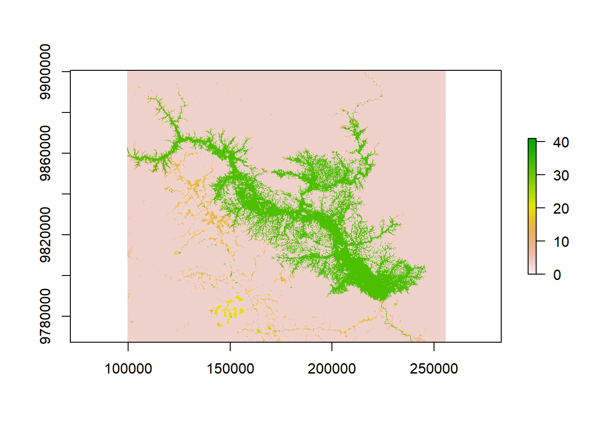
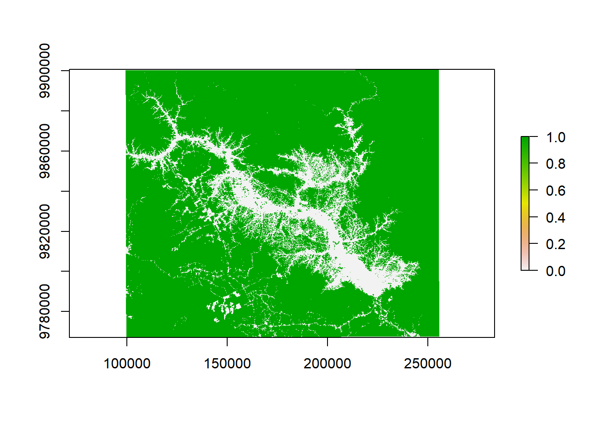
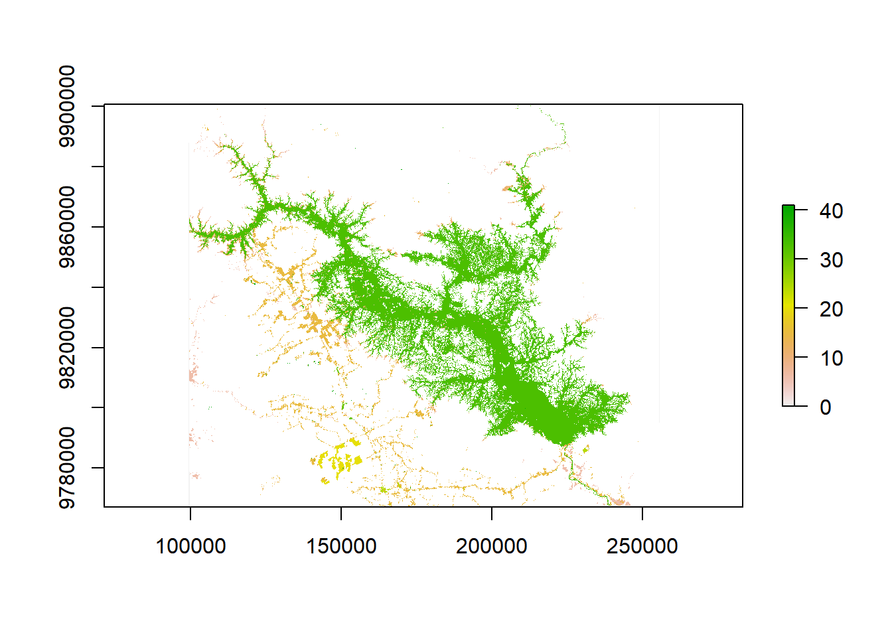
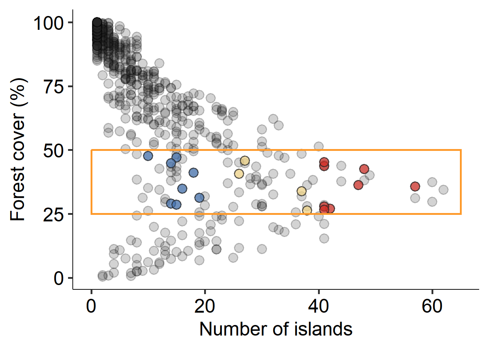
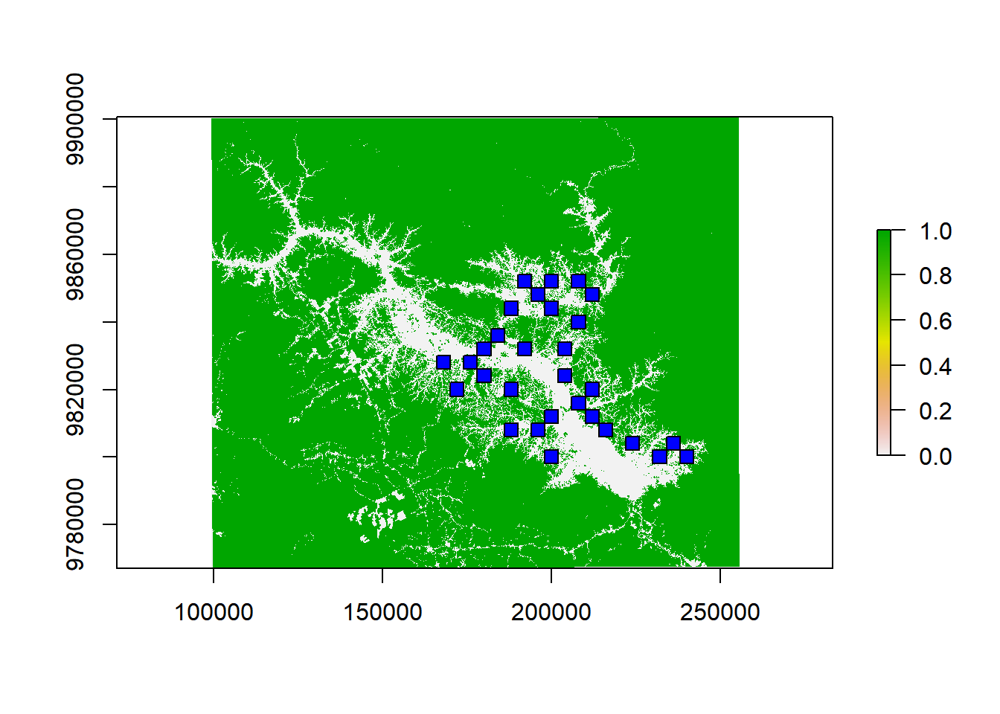
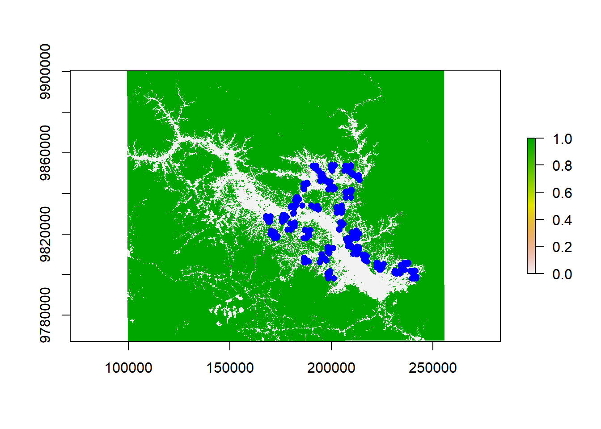
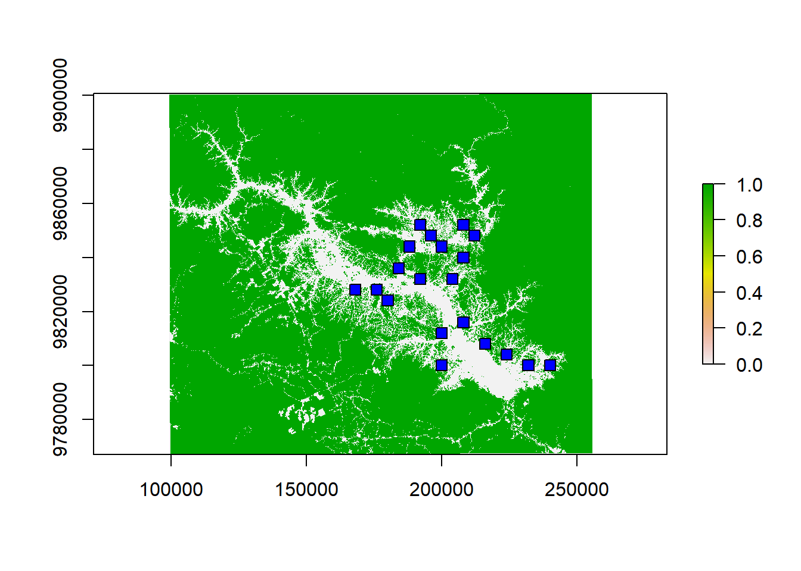

rm(list = ls()); gc(); dev.off()
set.seed(13)
# Load packages
library(raster)
library(sf)
library(terra)
library(landscapemetrics)
library(ggplot2)
library(ggpubr)2 The sampling design
To arrive at the sampling design used, we followed the steps below to select the landscapes and sampling points.
2.1 Data preparation before landscapes selection
I downloaded the land-use cover raster for Brazil in the year 2022 using the MAPBIOMAS Toolkit on the Google Engine. In the Google Engine itself, I selected the area of interest by using a shapefile as a mask. This shapefile is available on my GitHub as ‘Balbina.shp’ if you wish to crop it as I did. Alternatively, the raster file is also available on my GitHub as ‘Balbina_mapbiomas_collection8_2022.tif’.
# Import data
Balbina <- raster("Balbina_mapbiomas_collection8_2022.tif")
new_crs <- CRS("+proj=utm +south +zone=21 +datum=WGS84 +units=m +no_defs")
Balbina <- projectRaster(Balbina, crs=new_crs)
values(Balbina) = as.integer(values(Balbina))
check_landscape(Balbina) layer crs units class n_classes OK
1 1 projected m integer 12 ✔plot(Balbina)
Below, I (1) create an object only with forest pixels to calculate forest cover and the number of forest patches (habitat), and (2) create a new raster with all land-use types except forest (non-habitat). The reference code for land-use type and pixel values is here.
# Select only forest pixels
forest_formation <- Balbina == 3
forest_formation <- projectRaster(forest_formation, crs=new_crs)
values(forest_formation) = as.integer(values(forest_formation))
check_landscape(forest_formation) layer crs units class n_classes OK
1 1 projected m integer 2 ✔plot(forest_formation)
# Select all land-use types except forest
non_habitat <- Balbina
non_habitat[!(Balbina != 3)] <- NA
non_habitat <- projectRaster(non_habitat, crs=new_crs)
values(non_habitat) <- as.integer(values(non_habitat))
check_landscape(non_habitat) layer crs units class n_classes OK
1 1 projected m integer 23 ✔plot(non_habitat)
I covered the entire extent of Balbina with evenly spaced points. From these points, I created 4 km × 4 km landscapes and calculated forest cover and the number of fragments. I used the function sample_lsm from the landscapemetrics package to calculate these metrics. This function allows you to define the size and shape of the landscapes. Because our landscapes are square, the value of the size argument corresponds to half of the side length of the landscape. To calculate forest cover, I used the function lsm_c_pland inside sample_lsm. To calculate number of forest patches, I used the function lsm_c_np inside sample_lsm.
# Create a grid of points with a 4km interval
extent_grid <- as(extent(forest_formation), 'SpatialPolygons')
proj4string(extent_grid) <- crs(new_crs)
points <- sp::makegrid(extent_grid, cellsize = 4000) # Evenly spaced points (4km)
plot(forest_formation)
points(points, pch = ".")# Calculate forest cover in the landscapes
grid <- st_as_sf(points, coords = c("x1", "x2"), crs = new_crs)
forest_cover <- landscapemetrics::sample_lsm(forest_formation, y = grid,
size = 2000,
shape = "square",
what = "lsm_c_pland",
directions = 8)
forest_cover <- subset(forest_cover, forest_cover$class == 1) # Select only the presence of forest
# Calculate the number of patches in the landscapes
number_patches <- landscapemetrics::sample_lsm(forest_formation, y = grid,
size = 2000,
shape = "square",
what = "lsm_c_np",
directions = 8)
number_patches <- subset(number_patches, number_patches$class == 1) # Select only the presence of patches2.2 Landscape selection
Below, I plot forest cover (x-axis) against the number of fragments (y-axis) for each landscape (points).
I pre-selected landscapes with 25–50% forest cover because this range showed the greatest variation in fragmentation (number of forest patches). Within this selection, I searched for landscapes at the extremes of the number of patches gradient to make clear the characterization of few large patches and several small patches. I checked the distribution of each point on the map and sought to make a broad selection that covered a significant portion of the study area. I discarded side-by-side landscapes, and landscapes that I deemed inaccessible due to safety concerns.
The colored points represent the landscapes that were sampled.
# Plot number of patches X forest cover
number_patches$plot_id == forest_cover$plot_id
metrics <- as.data.frame(cbind(number_patches$plot_id, number_patches$value,
forest_cover$value))
colnames(metrics) <- c("id", "number_patches", "forest_cover")
sampled_lands <- read.csv("ants_env.csv")
sampled_lands <- sampled_lands[,1:3]
sampled_lands <- unique(sampled_lands)
sampled_lands <- sampled_lands[-c(21:24),] #removing the landscapes in the continuous forest with ~100% forest cover
sampled_lands$type <- NA
sampled_lands$type[1:8] <- "#d73027" #landscapes with many small patches
sampled_lands$type[9:12] <- "#fee090" #landscapes with several medium-sized patches
sampled_lands$type[13:20] <- "#4575b4" #landscapes with few large patches
NP_FC_plot <-
ggplot(data = metrics,
mapping = aes(x = number_patches, y = forest_cover)) +
labs(x = "Number of islands",
y = "Forest cover (%)") +
geom_point(alpha = 0.2, shape = 21, size = 4,
fill = "#252525") +
geom_point(data = sampled_lands, shape = 21,
mapping = aes(x = number_patches, y = forest_cover),
color = "#252525", fill = sampled_lands$type,
alpha = 0.7, size = 4) +
geom_rect(fill = NA, color="#fe9929",alpha=0.5,
mapping=aes(xmin=0, xmax=65, ymin=25,ymax=50)) +
theme_pubr(base_size = 20)NP_FC_plot
This plot show the relationship between forest cover and number of islands for the 1,080 16-km² landscapes in the entire area of the Balbina Hydroelectric Reservoir. Blue dots - low fragmentation; yellow dots - moderate fragmentation; red dots - high fragmentation.
#Select landscapes with 25 to 50% forest cover
metrics1 = subset(metrics, metrics$forest_cover <= 50 & metrics$forest_cover >= 25)
cor.test(metrics1$number_patches, metrics1$forest_cover) # not correlated (r=-0.14, p=0.20)
Pearson's product-moment correlation
data: metrics1$number_patches and metrics1$forest_cover
t = -1.2845, df = 80, p-value = 0.2027
alternative hypothesis: true correlation is not equal to 0
95 percent confidence interval:
-0.3484110 0.0772381
sample estimates:
cor
-0.1421517 # I selected 10 landscapes with few large patchs, 10 landscapes with many small, and 10 landscapes in the middle of the gradient
selected_landscapes <- subset(metrics,
metrics$id %in% c(76, 259, 301, 338, 387, # Many Small (MS)
468, 545, 584, 586, 588, # MS
299, 427, 428, 583, 585, # MS
546, # SS
28, 112, 145, 150, 186, # Few Large (FL)
228, 381, 384, 422, 503, # FL
188, 146, 229, 226, 542, # FL
549, # FL
66, 74, 115, 143, 189, 263, # Several medium-sized (SM)
269, 307, 340, 506 # SM
))
discarded_landscapes <- subset(metrics, metrics$id %in% c(690, 727, 646, 654,
789, 728, 489, 331,
749, 693, 687, 614,
452, 624, 604))
# Visualize in map
points$id <- seq(1,nrow(points), 1)
landscapes <- st_buffer(grid, endCapStyle = "SQUARE", dist = 2000)
landscapes$id <- points$id
landscapes <- landscapes[landscapes$id %in% selected_landscapes$id,]
landscapes <- merge(landscapes, metrics, by = "id")
# I selected the landscapes avoiding neighboring ones and maintaining SS above 40 fragments and SL below 20.
landscapes <- landscapes[-c(1, 9, 12, 14, 16, 20, 29, 30, 34, 36, 38, 40),]
plot(forest_formation)
plot(landscapes$geometry, add=TRUE, col="blue")
cor.test(landscapes$number_patches, landscapes$forest_cover) # Not correlated (r=-0.168)
Pearson's product-moment correlation
data: landscapes$number_patches and landscapes$forest_cover
t = -0.90412, df = 28, p-value = 0.3736
alternative hypothesis: true correlation is not equal to 0
95 percent confidence interval:
-0.4984470 0.2042398
sample estimates:
cor
-0.1684222 2.3 Point selection
I modified Pavel Dodonov’s function to randomly select only 10 points in each landscape while respecting a minimum distance of 200 meters. The original function is available at: https://github.com/pdodonov/sampling. The modified version is available in my GitHub as “siteSelection_v0.8.R”.
To avoid that the sampling points fall on the edge of the landscape and on the edge of fragments, I created:
a buffer 100 m inside each landscape;
a buffer 50 m inside each forest fragment, so the sampling points will be placed inside the fragment interior and not in its edges.
Using QGIS v.3.34 I transformed forest_cover raster into polygons, selected only the forest polygons (raster value = 1) and created a buffer 50 m inside all fragments. I imported it below:
source("siteSelection_v0.8.R")
buffer_landscapes <- sf::st_buffer(landscapes, dist = -100)
buffer_forest <- read_sf("Forest_buffer.shp")
buffer_forest <- st_set_crs(buffer_forest, new_crs)
sampling_points <- data.frame()
for (i in 1:30) {
set.seed(13)
# Extract the values from the extent of landscape i
landscape <- as(extent(buffer_landscapes[i, 4]), 'SpatialPolygons')
proj4string(landscape) <- crs(new_crs)
# Create points equally spaced at 100 meters within the extent of landscape i
recorders.i <- sp::makegrid(landscape, cellsize = 100)
recorders.i <- st_as_sf(recorders.i, coords = c("x1", "x2"), crs = new_crs)
# Extracts the raster values at the point locations and selects only the points in the forest (value = 1)
recorders.i <- recorders.i[buffer_forest,]
recorders.i <- st_set_crs(recorders.i, new_crs)
# Converts spatial points object into a data.frame and identifies each one.
recorders.i <- st_coordinates(recorders.i)
recorders.i <- as.data.frame(recorders.i)
recorders.i$id <- 1:nrow(recorders.i)
# Select random points at least 200 meters apart
recorders <- select.site(x = recorders.i, var.site = "id",
dist.min = 200, coord.X = "X",
coord.Y = "Y", Nmax = 10, Nsets = 1, Nmin = 10)
# Converts the results into a data.frame, identifies, and adds the coordinates
recorders <- as.data.frame(recorders)
colnames(recorders) <- "id"
recorders <- merge(recorders, recorders.i, by = "id")
sampling_points <- rbind(sampling_points, recorders)
}
plot(forest_formation)
points(sampling_points$X, sampling_points$Y, pch = 16, col = "blue")
2.4 The sampled landscapes and points
I calculated the area of the patches in the landscape considering only the portion of the patches that were inside the landscape extention. Below you can see the complete information about the sampling landscapes and points.
# Importing the raster with only the forest inside the landscapes
forest_landscapes <- rast("forest_within_sampled_landscapes.tif")
forest_landscapes <- project(forest_landscapes, crs(new_crs))
values(forest_landscapes) = as.integer(values(forest_landscapes))
check_landscape(forest_landscapes)
sampled_lands <- st_read("sampled_landscapes.shp")
ants <- read.csv("ants_env.csv")
ants_coord <- st_as_sf(ants, coords = c("long_utm", "lat_utm"), crs = new_crs)
sampled_patch_size <- extract_lsm(forest_landscapes, ants_coord, ants_coord$point_ID,
metric = "area", directions = 8)
ants_coord$patch_area <- sampled_patch_size$value[match(ants_coord$point_ID, sampled_patch_size$extract_id)]Below is the information for the points and landscapes sampled. You can also find it in my GitHub as “sampled_lands.csv”
ants_coord <- st_drop_geometry(ants_coord)
write.csv(ants_coord, "sampled_lands.csv")
ants_coord landscape number_patches forest_cover point point_ID sampling_date
1 S1 48 42.55 1 S1_1 04/12/2024
2 S1 48 42.55 2 S1_2 04/12/2024
3 S1 48 42.55 3 S1_3 04/12/2024
4 S1 48 42.55 4 S1_4 04/12/2024
5 S1 48 42.55 5 S1_5 04/12/2024
6 S1 48 42.55 6 S1_6 04/12/2024
7 S1 48 42.55 7 S1_7 04/12/2024
8 S1 48 42.55 8 S1_8 04/12/2024
9 S1 48 42.55 9 S1_9 04/12/2024
10 S1 48 42.55 10 S1_10 04/12/2024
11 S2 42 26.97 1 S2_1 16/11/2024
12 S2 42 26.97 2 S2_2 16/11/2024
13 S2 42 26.97 3 S2_3 16/11/2024
14 S2 42 26.97 4 S2_4 16/11/2024
15 S2 42 26.97 5 S2_5 16/11/2024
16 S2 42 26.97 6 S2_6 16/11/2024
17 S2 42 26.97 7 S2_7 16/11/2024
18 S2 42 26.97 8 S2_8 16/11/2024
19 S2 42 26.97 9 S2_9 16/11/2024
20 S2 42 26.97 10 S2_10 16/11/2024
21 S3 57 35.72 1 S3_1 10/11/2024
22 S3 57 35.72 2 S3_2 10/11/2024
23 S3 57 35.72 3 S3_3 10/11/2024
24 S3 57 35.72 4 S3_4 10/11/2024
25 S3 57 35.72 5 S3_5 10/11/2024
26 S3 57 35.72 6 S3_6 10/11/2024
27 S3 57 35.72 7 S3_7 10/11/2024
28 S3 57 35.72 8 S3_8 10/11/2024
29 S3 57 35.72 9 S3_9 10/11/2024
30 S3 57 35.72 10 S3_10 10/11/2024
31 S4 41 27.91 1 S4_1 24/11/2024
32 S4 41 27.91 2 S4_2 24/11/2024
33 S4 41 27.91 3 S4_3 24/11/2024
34 S4 41 27.91 4 S4_4 24/11/2024
35 S4 41 27.91 5 S4_5 24/11/2024
36 S4 41 27.91 6 S4_6 24/11/2024
37 S4 41 27.91 7 S4_7 24/11/2024
38 S4 41 27.91 8 S4_8 24/11/2024
39 S4 41 27.91 9 S4_9 24/11/2024
40 S4 41 27.91 10 S4_10 24/11/2024
41 S7 41 43.62 1 S7_1 23/11/2024
42 S7 41 43.62 2 S7_2 23/11/2024
43 S7 41 43.62 3 S7_3 23/11/2024
44 S7 41 43.62 4 S7_4 23/11/2024
45 S7 41 43.62 5 S7_5 23/11/2024
46 S7 41 43.62 6 S7_6 23/11/2024
47 S7 41 43.62 7 S7_7 23/11/2024
48 S7 41 43.62 8 S7_8 23/11/2024
49 S7 41 43.62 9 S7_9 23/11/2024
50 S7 41 43.62 10 S7_10 23/11/2024
51 S8 41 26.56 1 S8_1 26/11/2024
52 S8 41 26.56 2 S8_2 26/11/2024
53 S8 41 26.56 3 S8_3 26/11/2024
54 S8 41 26.56 4 S8_4 26/11/2024
55 S8 41 26.56 5 S8_5 26/11/2024
56 S8 41 26.56 6 S8_6 26/11/2024
57 S8 41 26.56 7 S8_7 26/11/2024
58 S8 41 26.56 8 S8_8 26/11/2024
59 S8 41 26.56 9 S8_9 26/11/2024
60 S8 41 26.56 10 S8_10 26/11/2024
61 S9 41 45.27 1 S9_1 27/11/2024
62 S9 41 45.27 2 S9_2 27/11/2024
63 S9 41 45.27 3 S9_3 27/11/2024
64 S9 41 45.27 4 S9_4 27/11/2024
65 S9 41 45.27 5 S9_5 27/11/2024
66 S9 41 45.27 6 S9_6 27/11/2024
67 S9 41 45.27 7 S9_7 27/11/2024
68 S9 41 45.27 8 S9_8 27/11/2024
69 S9 41 45.27 9 S9_9 27/11/2024
70 S9 41 45.27 10 S9_10 27/11/2024
71 S10 47 36.22 1 S10_1 12/11/2024
72 S10 47 36.22 2 S10_2 12/11/2024
73 S10 47 36.22 3 S10_3 12/11/2024
74 S10 47 36.22 4 S10_4 12/11/2024
75 S10 47 36.22 5 S10_5 12/11/2024
76 S10 47 36.22 6 S10_6 12/11/2024
77 S10 47 36.22 7 S10_7 12/11/2024
78 S10 47 36.22 8 S10_8 12/11/2024
79 S10 47 36.22 9 S10_9 12/11/2024
80 S10 47 36.22 10 S10_10 12/11/2024
81 M2 38 26.31 1 M2_1 06/12/2024
82 M2 38 26.31 2 M2_2 06/12/2024
83 M2 38 26.31 3 M2_3 06/12/2024
84 M2 38 26.31 4 M2_4 06/12/2024
85 M2 38 26.31 5 M2_5 06/12/2024
86 M2 38 26.31 6 M2_6 06/12/2024
87 M2 38 26.31 7 M2_7 06/12/2024
88 M2 38 26.31 8 M2_8 06/12/2024
89 M2 38 26.31 9 M2_9 06/12/2024
90 M2 38 26.31 10 M2_10 06/12/2024
91 M6 26 40.65 1 M6_1 01/12/2024
92 M6 26 40.65 2 M6_2 01/12/2024
93 M6 26 40.65 3 M6_3 01/12/2024
94 M6 26 40.65 4 M6_4 01/12/2024
95 M6 26 40.65 5 M6_5 01/12/2024
96 M6 26 40.65 6 M6_6 01/12/2024
97 M6 26 40.65 7 M6_7 01/12/2024
98 M6 26 40.65 8 M6_8 01/12/2024
99 M6 26 40.65 9 M6_9 01/12/2024
100 M6 26 40.65 10 M6_10 01/12/2024
101 M9 27 45.75 1 M9_1 15/11/2024
102 M9 27 45.75 2 M9_2 15/11/2024
103 M9 27 45.75 3 M9_3 15/11/2024
104 M9 27 45.75 4 M9_4 15/11/2024
105 M9 27 45.75 5 M9_5 15/11/2024
106 M9 27 45.75 6 M9_6 15/11/2024
107 M9 27 45.75 7 M9_7 15/11/2024
108 M9 27 45.75 8 M9_8 15/11/2024
109 M9 27 45.75 9 M9_9 15/11/2024
110 M9 27 45.75 10 M9_10 15/11/2024
111 M10 37 33.82 1 M10_1 11/11/2024
112 M10 37 33.82 2 M10_2 11/11/2024
113 M10 37 33.82 3 M10_3 11/11/2024
114 M10 37 33.82 4 M10_4 11/11/2024
115 M10 37 33.82 5 M10_5 11/11/2024
116 M10 37 33.82 6 M10_6 11/11/2024
117 M10 37 33.82 7 M10_7 11/11/2024
118 M10 37 33.82 8 M10_8 11/11/2024
119 M10 37 33.82 9 M10_9 11/11/2024
120 M10 37 33.82 10 M10_10 11/11/2024
121 L1 18 41.11 1 L1_1 05/12/2024
122 L1 18 41.11 2 L1_2 05/12/2024
123 L1 18 41.11 3 L1_3 05/12/2024
124 L1 18 41.11 4 L1_4 05/12/2024
125 L1 18 41.11 5 L1_5 05/12/2024
126 L1 18 41.11 6 L1_6 05/12/2024
127 L1 18 41.11 7 L1_7 05/12/2024
128 L1 18 41.11 8 L1_8 05/12/2024
129 L1 18 41.11 9 L1_9 05/12/2024
130 L1 18 41.11 10 L1_10 05/12/2024
131 L2 15 47.10 1 L2_1 30/11/2024
132 L2 15 47.10 2 L2_2 30/11/2024
133 L2 15 47.10 3 L2_3 30/11/2024
134 L2 15 47.10 4 L2_4 30/11/2024
135 L2 15 47.10 5 L2_5 30/11/2024
136 L2 15 47.10 6 L2_6 30/11/2024
137 L2 15 47.10 7 L2_7 30/11/2024
138 L2 15 47.10 8 L2_8 30/11/2024
139 L2 15 47.10 9 L2_9 30/11/2024
140 L2 15 47.10 10 L2_10 30/11/2024
141 L3 19 31.28 1 L3_1 02/12/2024
142 L3 19 31.28 2 L3_2 02/12/2024
143 L3 19 31.28 3 L3_3 02/12/2024
144 L3 19 31.28 4 L3_4 02/12/2024
145 L3 19 31.28 5 L3_5 02/12/2024
146 L3 19 31.28 6 L3_6 02/12/2024
147 L3 19 31.28 7 L3_7 02/12/2024
148 L3 19 31.28 8 L3_8 02/12/2024
149 L3 19 31.28 9 L3_9 02/12/2024
150 L3 19 31.28 10 L3_10 02/12/2024
151 L4 14 29.02 1 L4_1 29/11/2024
152 L4 14 29.02 2 L4_2 29/11/2024
153 L4 14 29.02 3 L4_3 29/11/2024
154 L4 14 29.02 4 L4_4 29/11/2024
155 L4 14 29.02 5 L4_5 29/11/2024
156 L4 14 29.02 6 L4_6 29/11/2024
157 L4 14 29.02 7 L4_7 29/11/2024
158 L4 14 29.02 8 L4_8 29/11/2024
159 L4 14 29.02 9 L4_9 29/11/2024
160 L4 14 29.02 10 L4_10 29/11/2024
161 L7 15 28.61 1 L7_1 17/11/2024
162 L7 15 28.61 2 L7_2 17/11/2024
163 L7 15 28.61 3 L7_3 17/11/2024
164 L7 15 28.61 4 L7_4 17/11/2024
165 L7 15 28.61 5 L7_5 17/11/2024
166 L7 15 28.61 6 L7_6 17/11/2024
167 L7 15 28.61 7 L7_7 17/11/2024
168 L7 15 28.61 8 L7_8 17/11/2024
169 L7 15 28.61 9 L7_9 17/11/2024
170 L7 15 28.61 10 L7_10 17/11/2024
171 L8 10 47.69 1 L8_1 14/11/2024
172 L8 10 47.69 2 L8_2 14/11/2024
173 L8 10 47.69 3 L8_3 14/11/2024
174 L8 10 47.69 4 L8_4 14/11/2024
175 L8 10 47.69 5 L8_5 14/11/2024
176 L8 10 47.69 6 L8_6 14/11/2024
177 L8 10 47.69 7 L8_7 14/11/2024
178 L8 10 47.69 8 L8_8 14/11/2024
179 L8 10 47.69 9 L8_9 14/11/2024
180 L8 10 47.69 10 L8_10 14/11/2024
181 L9 16 34.79 1 L9_1 25/11/2024
182 L9 16 34.79 2 L9_2 25/11/2024
183 L9 16 34.79 3 L9_3 25/11/2024
184 L9 16 34.79 4 L9_4 25/11/2024
185 L9 16 34.79 5 L9_5 25/11/2024
186 L9 16 34.79 6 L9_6 25/11/2024
187 L9 16 34.79 7 L9_7 25/11/2024
188 L9 16 34.79 8 L9_8 25/11/2024
189 L9 16 34.79 9 L9_9 25/11/2024
190 L9 16 34.79 10 L9_10 25/11/2024
191 L10 14 44.87 1 L10_1 09/11/2024
192 L10 14 44.87 2 L10_2 09/11/2024
193 L10 14 44.87 3 L10_3 09/11/2024
194 L10 14 44.87 4 L10_4 09/11/2024
195 L10 14 44.87 5 L10_5 09/11/2024
196 L10 14 44.87 6 L10_6 09/11/2024
197 L10 14 44.87 7 L10_7 09/11/2024
198 L10 14 44.87 8 L10_8 09/11/2024
199 L10 14 44.87 9 L10_9 09/11/2024
200 L10 14 44.87 10 L10_10 09/11/2024
long lat patch_area
1 -59.35265 -1.818951 15.75
2 -59.34067 -1.825113 15.75
3 -59.33556 -1.821043 10.53
4 -59.32090 -1.817907 19.62
5 -59.32901 -1.804210 9.81
6 -59.32111 -1.793716 3.42
7 -59.33885 -1.800708 77.22
8 -59.34153 -1.794377 35.37
9 -59.34820 -1.794522 4.95
10 -59.34572 -1.807705 12.51
11 -59.67173 -1.531839 9.36
12 -59.66508 -1.528340 9.90
13 -59.66274 -1.520101 25.38
14 -59.65467 -1.526437 28.71
15 -59.65018 -1.531866 22.68
16 -59.64747 -1.518313 54.72
17 -59.65104 -1.501137 6.03
18 -59.65479 -1.505344 20.97
19 -59.66901 -1.507441 55.08
20 -59.67530 -1.508337 20.16
21 -59.74609 -1.389866 16.47
22 -59.72724 -1.388081 19.26
23 -59.72026 -1.378690 6.84
24 -59.72992 -1.375426 49.32
25 -59.72156 -1.366471 7.02
26 -59.73618 -1.358249 24.48
27 -59.74427 -1.362758 41.40
28 -59.74158 -1.365472 41.40
29 -59.73350 -1.367289 94.86
30 -59.74428 -1.369987 13.41
31 -59.77924 -1.322966 28.44
32 -59.77296 -1.322973 25.74
33 -59.76308 -1.323878 28.08
34 -59.77207 -1.332905 46.17
35 -59.76399 -1.335625 46.35
36 -59.75392 -1.337399 9.45
37 -59.76115 -1.341240 19.89
38 -59.75413 -1.345577 67.95
39 -59.76359 -1.351205 8.01
40 -59.77417 -1.345581 9.36
41 -59.87051 -1.577717 26.10
42 -59.86214 -1.602722 9.27
43 -59.87478 -1.602053 14.67
44 -59.87526 -1.594119 45.72
45 -59.88892 -1.598925 12.42
46 -59.88801 -1.592140 8.37
47 -59.88274 -1.587558 16.74
48 -59.87956 -1.584345 57.15
49 -59.87922 -1.579458 57.15
50 -59.88803 -1.578487 10.80
51 -59.96808 -1.556744 98.91
52 -59.96627 -1.548624 24.21
53 -59.97267 -1.550006 21.06
54 -59.97457 -1.555696 98.91
55 -59.98314 -1.554220 12.60
56 -59.98424 -1.557634 20.07
57 -59.99757 -1.568249 12.42
58 -59.99769 -1.555202 25.02
59 -59.99776 -1.544884 6.21
60 -59.98573 -1.549401 19.26
61 -59.62912 -1.430932 71.55
62 -59.63301 -1.437895 71.55
63 -59.63391 -1.443317 105.48
64 -59.63754 -1.444036 12.60
65 -59.63937 -1.451526 105.48
66 -59.63767 -1.455558 14.04
67 -59.62672 -1.460361 31.77
68 -59.62038 -1.460007 8.19
69 -59.61614 -1.455539 4.77
70 -59.61878 -1.445657 9.72
71 -59.62647 -1.334367 11.52
72 -59.61219 -1.333451 61.65
73 -59.61674 -1.341219 61.65
74 -59.62122 -1.333080 66.78
75 -59.61854 -1.349351 19.53
76 -59.62227 -1.353956 19.35
77 -59.63920 -1.341421 8.82
78 -59.62224 -1.324041 40.41
79 -59.63919 -1.345705 19.89
80 -59.63238 -1.327338 12.87
81 -59.41866 -1.821746 8.82
82 -59.41659 -1.812647 8.82
83 -59.41107 -1.808559 11.34
84 -59.39275 -1.802446 10.17
85 -59.39612 -1.797416 11.25
86 -59.41251 -1.803324 11.70
87 -59.41608 -1.801520 96.48
88 -59.41936 -1.796092 96.48
89 -59.40098 -1.797545 20.16
90 -59.42334 -1.802749 9.36
91 -59.70983 -1.809237 298.44
92 -59.70977 -1.799866 54.99
93 -59.70263 -1.801115 40.23
94 -59.70352 -1.792971 19.35
95 -59.69659 -1.796714 15.30
96 -59.69376 -1.806776 22.50
97 -59.68764 -1.804056 31.95
98 -59.69019 -1.814328 31.23
99 -59.69388 -1.818253 17.82
100 -59.70715 -1.816462 298.44
101 -59.92517 -1.547299 42.84
102 -59.92485 -1.557221 6.30
103 -59.92656 -1.563001 24.03
104 -59.92544 -1.570158 8.64
105 -59.92796 -1.555290 33.21
106 -59.92150 -1.558526 23.22
107 -59.91638 -1.552173 497.88
108 -59.91038 -1.544609 497.88
109 -59.90059 -1.543511 497.88
110 -59.89959 -1.554211 497.88
111 -59.70970 -1.422026 34.65
112 -59.70270 -1.421429 11.16
113 -59.69675 -1.421563 25.92
114 -59.69943 -1.413426 23.85
115 -59.68818 -1.417488 220.95
116 -59.68332 -1.414493 12.24
117 -59.68001 -1.403851 7.29
118 -59.69199 -1.396562 30.78
119 -59.70358 -1.395076 28.44
120 -59.71038 -1.398782 19.35
121 -59.48435 -1.785149 169.38
122 -59.47806 -1.784263 169.38
123 -59.47087 -1.777032 53.64
124 -59.47334 -1.763905 92.07
125 -59.47176 -1.773416 53.64
126 -59.48074 -1.771596 25.47
127 -59.49616 -1.768520 29.79
128 -59.46456 -1.761675 92.07
129 -59.49061 -1.757130 90.00
130 -59.49689 -1.756208 90.00
131 -59.55882 -1.723587 203.94
132 -59.55074 -1.719078 203.94
133 -59.55522 -1.719072 203.94
134 -59.54480 -1.719204 164.43
135 -59.54176 -1.724513 164.43
136 -59.53683 -1.728163 164.43
137 -59.54092 -1.719742 164.43
138 -59.53910 -1.748930 213.39
139 -59.54179 -1.747109 213.39
140 -59.55166 -1.741673 213.39
141 -59.62374 -1.678264 119.61
142 -59.61086 -1.675615 119.61
143 -59.62610 -1.662047 50.22
144 -59.61532 -1.657534 98.82
145 -59.61711 -1.658435 98.82
146 -59.62011 -1.652050 98.82
147 -59.62249 -1.645775 103.77
148 -59.62698 -1.648480 103.77
149 -59.62518 -1.645772 103.77
150 -59.63058 -1.650292 103.77
151 -59.68900 -1.689065 36.54
152 -59.71329 -1.686509 122.31
153 -59.71055 -1.685420 122.31
154 -59.70607 -1.689945 122.31
155 -59.71237 -1.692647 122.31
156 -59.70668 -1.697707 184.50
157 -59.70700 -1.713440 184.50
158 -59.71239 -1.708019 184.50
159 -59.70615 -1.706826 184.50
160 -59.71057 -1.698984 184.50
161 -59.85509 -1.496180 260.82
162 -59.85268 -1.489099 260.82
163 -59.84947 -1.485533 260.82
164 -59.85594 -1.481486 260.82
165 -59.85550 -1.476869 260.82
166 -59.85213 -1.464747 9.09
167 -59.84717 -1.465558 32.76
168 -59.84047 -1.470175 77.85
169 -59.83778 -1.472889 77.85
170 -59.82435 -1.499111 25.38
171 -59.78043 -1.513066 95.40
172 -59.78314 -1.503538 73.62
173 -59.77597 -1.502255 48.51
174 -59.76205 -1.502553 472.14
175 -59.76599 -1.506425 472.14
176 -59.77138 -1.508225 472.14
177 -59.76464 -1.513529 472.14
178 -59.75805 -1.520315 472.14
179 -59.75344 -1.517285 472.14
180 -59.75790 -1.507465 472.14
181 -59.81037 -1.418182 49.50
182 -59.80484 -1.407797 137.07
183 -59.80088 -1.402452 137.07
184 -59.80357 -1.399738 137.07
185 -59.81564 -1.394040 36.54
186 -59.80986 -1.401547 72.18
187 -59.81794 -1.403335 225.27
188 -59.81347 -1.409675 225.27
189 -59.81705 -1.412373 225.27
190 -59.81976 -1.420502 225.27
191 -59.58743 -1.388085 121.86
192 -59.57335 -1.374824 240.03
193 -59.57150 -1.366203 240.03
194 -59.58550 -1.370201 220.68
195 -59.57710 -1.382990 240.03
196 -59.58377 -1.364898 220.68
197 -59.59190 -1.384339 121.86
198 -59.57677 -1.364535 220.68
199 -59.60419 -1.363827 105.66
200 -59.60000 -1.357523 105.66plot(forest_formation)
plot(sampled_lands, add=TRUE, col = "blue")Warning in plot.sf(sampled_lands, add = TRUE, col = "blue"): ignoring all but
the first attribute